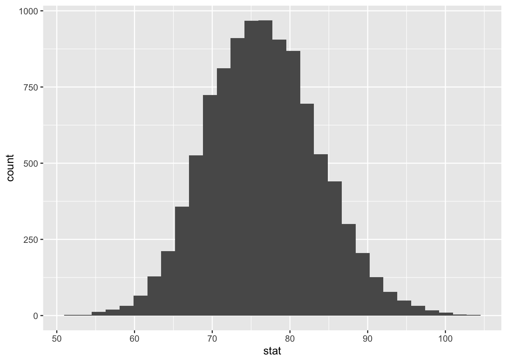

library(tidyverse)
library(tidymodels)Quantifying uncertainty
Application exercise
Answers
Learning goals
By the end of today, you will…
- Define and understand sampling variability
- Introduce bootstrapping
- Introduce confidence intervals
Population vs Sample
Motivation
We have data on the price per guest (ppg) for a random sample of 50 Airbnb listings in 2020 for Asheville, NC. We are going to use these data to investigate what we would of expected to pay for an Airbnb in in Asheville, NC in June 2020. Read in the data and answer the following questions.
abb <- read_csv("data/asheville.csv")
glimpse(abb)Rows: 50
Columns: 1
$ ppg <dbl> 48.00000, 40.00000, 99.00000, 13.00000, 55.00000, 75.00000, 74.000…Terminology
Population parameter - What we are interested in. Statistical measure that describes an entire population.
Sample statistic (point estimate) - describes a sample. A piece of information you get from a fraction of the population.
Use these data and the tools we’ve learned in this class to come up with your best guess for what you would expect to pay (i.e. true price) for an Airbnb in Asheville, NC (June 2020).
abb |>
summarize(ppg.mean = mean(ppg))# A tibble: 1 × 1
ppg.mean
<dbl>
1 76.6Do you think your guess is correct?
Not really
- If you want to estimate a population parameter, do you prefer to report a range of values the parameter might be in, or a single value?
Range of values
- Variability - How spread out your data are. Uncertainty.
Suppose we split the class in half and ask each student their height. Then, we calculate the mean height of students on each side of the classroom. Would you expect these two means to be exactly equal, close but not equal, or wildly different?
Close, but not equal
Why do we care?
We can quantify the variability of the sample statistics to help calculate a range of plausible values for the population parameter of interest
Bootstrapping is a statistical procedure that re samples a single data set to create many simulated samples.
Simulation: via bootstrapping or “resampling” techniques (today’s focus)
The term bootstrapping comes from the phrase “pulling oneself up by one’s bootstraps”, which is a metaphor for accomplishing an impossible task without any outside help
Impossible task: estimating a population parameter using data from only the given sample.
Note: This notion of saying something about a population parameter using only information from an observed sample is the crux of statistical inference, it is not limited to bootstrapping.
How do we do this?
Goal: create a distribution of sample statistics under “the same” conditions. How do we do this?
Demo
- Resample with replacement from our data n (50) times - Calculate the new resampled mean - Plot it - Do this entire process many many times
Confidence Interval
- What is it?
Range of plausiable values for our population parameter… just like we wanted!
Exercise 1 - Airbnb
Let’s bootstrap!
It’s good practice to ask yourself the following questions:
- What is my sample statistic? 76.6
- How many draws do we need for our bootstrap sample? n number of times (50)
Fill in the *** from the bootstrap sample code below.
set.seed(12345)
boot_df <- abb |>
specify(response = ppg) |>
generate(reps = 10000, type = "bootstrap") |>
calculate(stat = "mean")- Take a glimpse at
boot_df. What do you see?
glimpse(boot_df)Rows: 10,000
Columns: 2
$ replicate <int> 1, 2, 3, 4, 5, 6, 7, 8, 9, 10, 11, 12, 13, 14, 15, 16, 17, 1…
$ stat <dbl> 81.03667, 63.22333, 81.23333, 76.11333, 81.31833, 84.60500, …- Plot a histogram of
boot_df. Where is it centered? Why does this make sense?
boot_df |>
ggplot(
aes( x = stat)
) +
geom_histogram()`stat_bin()` using `bins = 30`. Pick better value with `binwidth`.
Now, let’s use boot_dfto create our 95% confidence interval.
boot_df |>
summarize(
lower = quantile(stat, 0.025),
upper = quantile(stat, 0.975)
)# A tibble: 1 × 2
lower upper
<dbl> <dbl>
1 63.3 91.0Let’s visualize our confidence interval by adding a vertical line at each of these values. Use the code you wrote above and add two lines using geom_vline.
boot_df |>
ggplot(
aes(x = stat)
) +
geom_histogram() +
geom_vline(xintercept = c(63.3, 91.0)) `stat_bin()` using `bins = 30`. Pick better value with `binwidth`.
Interpretation
Confidence intervals - range of plausible values for our parameter of interest
Confidence intervals are often misinterpreted as probability….
Lets explore: http://www.rossmanchance.com/ISIapplets.html
- How do we interpret this?
A There is a 95% probability the true mean price per night for an Airbnb in Asheville is between 63.3 and 91.0.
B There is a 95% probability the price per night for an Airbnb in Asheville is between 63.3 and 91.0.
C We are 95% confident the true mean price per night for Airbnbs in Asheville is between 63.3 and 91.0 $.
D We are 95% confident the price per night for an Airbnb in Asheville is between 63.3 and 91.0.
Optional
Now, create a 90% confidence interval. Report it below. Is it wider or more narrow than the 95% confidence interval?
# add code here